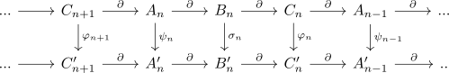
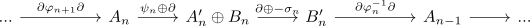
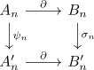
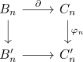
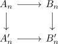
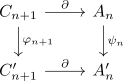
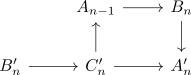
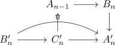
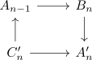
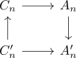

algebraic mayer-vietoris sequence
Proposition
Let $\mathcal{A}$ be an abelian category and

a diagram, where both rows are exact and each $\varphi_(-)$ is an isomorphisms
Then there exists an exact sequence

Proof
R-Mod
exact at $A_n' \oplus B_n$
zero map
follows from commutativity of the square

hence
image
Let $(a,b) \in \mathrm{ker}(\partial \oplus - \sigma_n)$.\sigma_n Then it follows that $\partial(a) \in \mathrm{ker}(\partial) \hookrightarrow B_n'$. This shows that $\sigma_n(b) = +\partial(a)$ is also an element in the kernel o $\partial: B_n' \rightarrow C_n'$. By commutativity of

we conclude that
Further it follows that $b \in \mathrm{ker}(\partial)$ as $\varphi_n$ is a monomorphism (cf. kernel and postcomposition with a monomorphism) Hence we may choose a fibre $\overline{a} \in A_n$ of $b \in B_n$ Then
as

commutes and
Therefore we may lift $\psi_n(\overline{a}) - a$ to a fibre $c \in C_{n+1}'$ and then consider
Then
is a desired fibre of $(a,b)$:
Note that
Furthermore by commutativity of

we conclude that
exact at $B_n'$
zero map
Note that the first component is given by
And similarly the second is given by
where
is given by diagram and inverting morphisms
image
Let $b \in \mathrm{ker}(\partial \varphi^{-1}_n \partial)$. Then $\varphi_n^{-1}\partial(b) \in \mathrm{ker}(\partial)$, hence by exactness of the top row we may choose a fibre $\overline{b} \in B_n$. Then consider
it follows that by commutativity
Therefore we may choose a fibre $a \in A_n'$ with $\partial(a) = b - \sigma_n(\overline{b}$
Then by construction
is a fibre of $b$
exact at $A_{n-1}$
zero map
follows from

where the first component is given as composition

and the second is analogously zero as

commutes by the proposition about diagrams and inverting morphisms
image
Let $a \in \mathrm{ker}(\psi_n \oplus \partial)$ then we may take a fibre $c$ of $a$ under $\partial$ Then by commutativity of

we conclude that
hence we may choose a fibre $b \in B_n'$.
This $b$ also suffices for the boundary map $\partial \varphi^{-1} \partial$ as